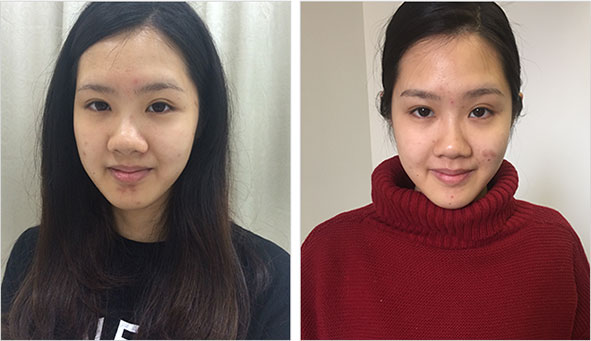
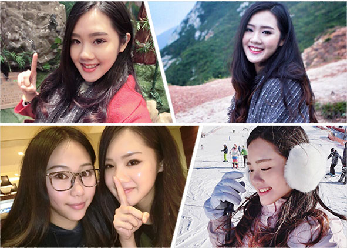
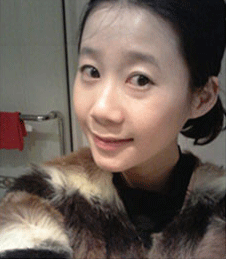
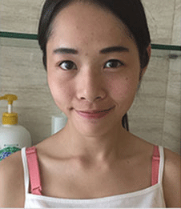
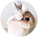

小曼从小就是一个黑妞，脸上还有一小块一小块的斑点。“非洲妹”这个外号伴随了我整个学习生涯，令我非常自卑。所以我特别注重皮肤美白护理。肤色黑，真的很残念！化妆时要涂很多层粉底，才能遮住原本的肤色，而且还不自然，小曼用了网上的很多美白偏方，但是都不成功，也用过n多化妆品，还打过美白针，最终结果不是反弹就是皮肤严重过敏，然而皮肤却一点也没有变白！
以前不护肤美白的时候，就是这样的↓↓↓
但女人对于美丽的追求是无止境的，小曼没有放弃，一直在努力寻找彻底美白的方法。功夫不负有心人，我通过琦琦推荐的一套美白皮肤的方法终于丑小鸭变天鹅啦。朋友见到我，个个都问："小曼，你怎么变得那么美！我也要跟琦琦学护肤！"下面是我皮肤美白后的照片。
现在啊，坚持每天护肤美白，真的自信很多
这个方法，不仅能让你的肌肤由内而外变白！还能补水调理皮肤，淡斑！有斑点的人使用也能让皮肤淡化斑点，越来越好！很多女孩想学会适合自己的护肤方式，但苦于不懂得护肤的技巧，所以迟迟没有行动。
小曼也是过来人，当初什么都不懂，花了很多冤枉钱，直到得到琦琦的护肤指导才学会正确的护肤方式。所以为了帮助各位爱美的女孩少走歪路，琦琦开始分享自己护肤变美的经历，并且教大家如何选择适合自己的护肤方式。
无图无真相
下面给大家分享在琦琦帮助下学会护肤逆袭成女神的案例
上班族徐美娜，经常加班。之前没护肤观念，慢慢的皮肤变得黑黄没光泽，斑点布满整张脸。在公司工作多年一直勤奋努力，但升职加薪的机会总轮不到她。用了琦琦的美白嫩肤的方法后，皮肤白嫩细腻，斑点也变少了！现在的肌肤状态超好！公司同事都大吃一惊，老总在一个月前将她升为部门主管。
-
美白前
-
美白后
菲菲是大一新生，加上残留的化妆品，空气中的灰尘等污染物，使得毛孔里有很多的污垢。脸部倘若不注意适当的清洁，极容易引起皮肤出现毛孔堵塞、晦暗、无光泽等现象。跟着琦琦学会了护肤之后，同时适当保留皮肤脂质，皮肤感觉清爽不紧绷、湿润不滑腻,被暗恋多年的男神表白！
-

清洁前
-
清洁后
宝妈琳达皮肤修复能力很差，之前晒黑后一直白不回来，脸上留下了晒伤的黑色素沉淀，这让她苦恼了好久！生完孩子后之后脸蛋更加暗黄。在琦琦的方法下，她的皮肤不仅越来越白，晒伤留下的黑色素也没了！别人听说她是一位宝妈的时候完全吓一跳，因为朋友说：琳达的皮肤看起来真的很水嫩很少女呢？所以……老公对她重燃爱火！
-

防晒前
-
防晒后
肯听琦琦意见，动手护肤美白的女孩都越来越美啦！你会是下一个逆袭的丑小鸭吗？妹子们，变美要趁早！护肤美白变美，你的人生从此变得不一样！
》》快加琦琦微信，逆袭变女神！为了更好的为大家服务，希望大家加我为微信好友后能主动咨询！因为每天加琦琦的人实在太多啦！你不问，我就不知道你是否需要帮助喔！
-
Smile_陈诗涵
大学刚毕业去面试，前面聊的好好的，然后问说你的皮肤真的很黑耶！然后就没有然后了！！！TnT希望可以求助琦琦~求改变~
-
Vivi季茉
一直自己乱用护肤品，不但没白，皮肤还越来越差！加上还用了那些柠檬片敷脸，毛孔都搞大了，想死的心都有！琦琦差不多花了3个多月的时间才把我的皮肤修复好了，时间虽然长了点，但真心值得。
-
小爱大人
本来是有点效果的，但最近又作死地跑去了三亚玩了1个星期！在海边晒成狗！！！NO ZUO NO DIE啊~琦琦姐求打救啊~~~~
-
豆豆鱼子酱
跟着琦琦护肤2个多月了，最大的感受是，有人教真的会走少很多弯路，小曼主要是帮你找到合适的护肤方案，但最终能不能变白主要还是要看自己能不能坚持！
-
安妮的阿木木
只想说对琦琦姐羡慕嫉妒恨，是不是美的人都特别懂护肤美白
-
豆浆油条
总算不用被班里人笑我是黑妹了，姐要亮瞎他们的眼！
-
RoseLin
不会护肤美白姐妹们的真的要好好跟琦琦学一下了！我一直苦于大油田的脸蛋，琦琦一教我如何摆脱大油田，现在皮肤变得嫩嫩的，大油田拜拜啦！
-
小柯
旅游晒黑的，各种偏方折腾3个月了，都没白回来，快急死了。幸好有琦琦，按她的经验，在防晒、护理上花心思，现在已经慢慢开始变白了，鸡冻！！琦琦么么哒！